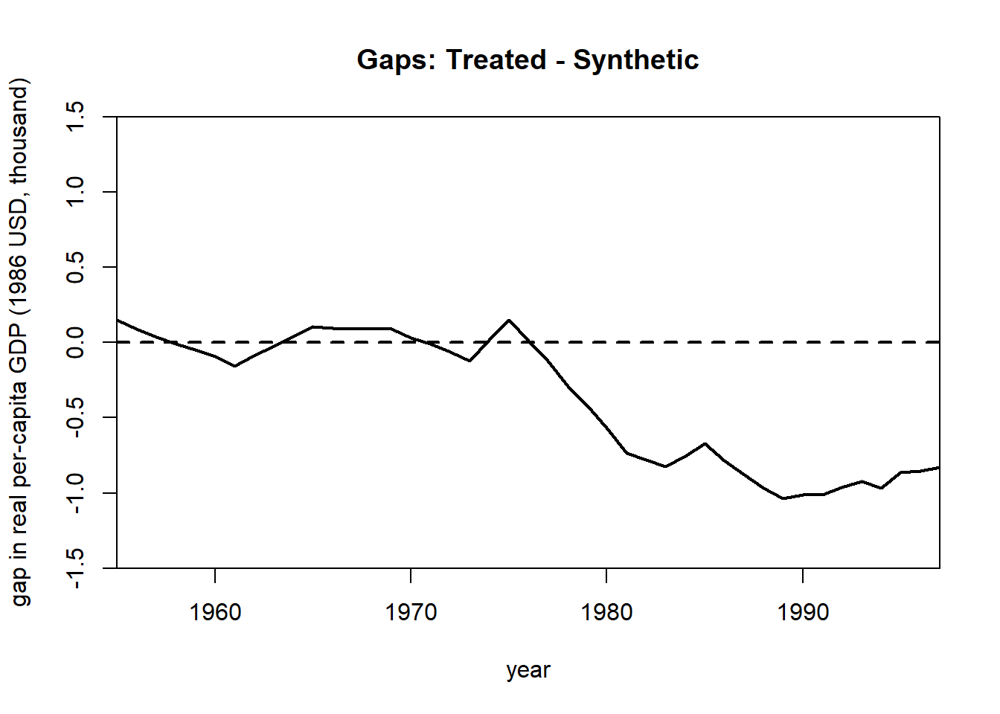
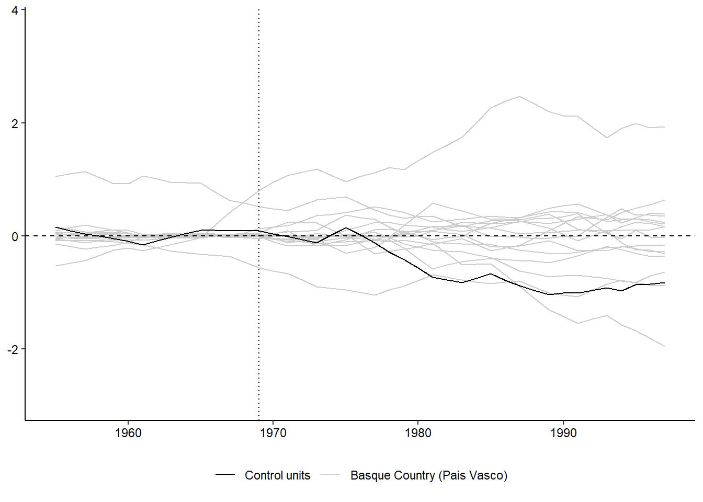
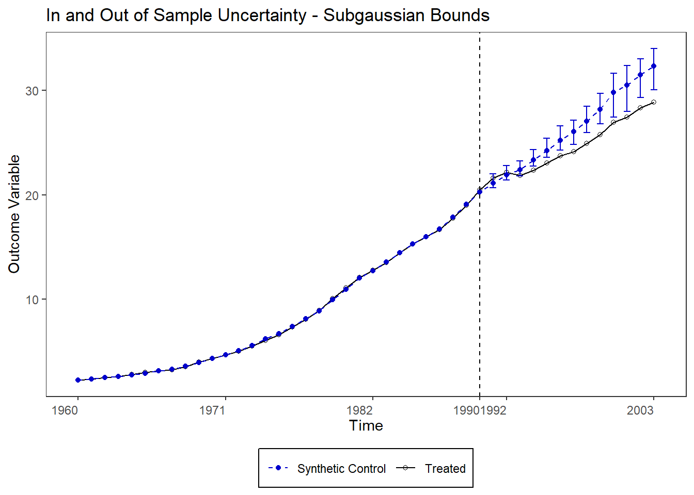
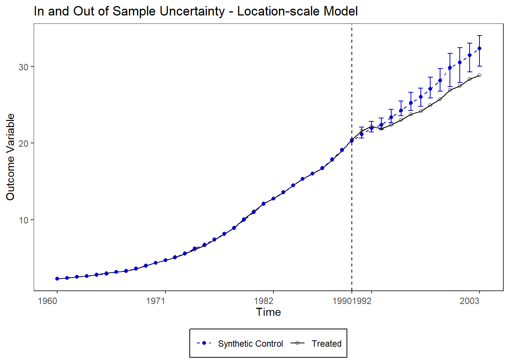
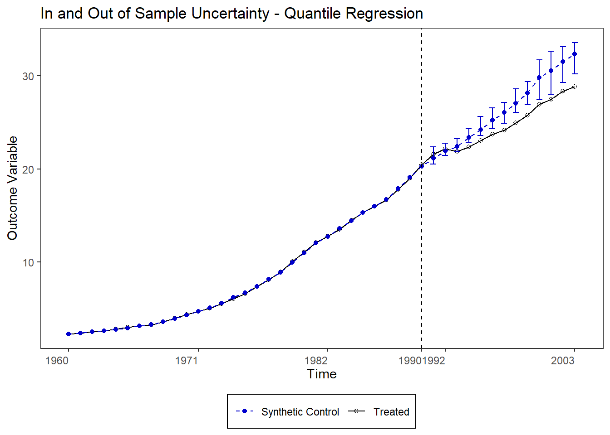
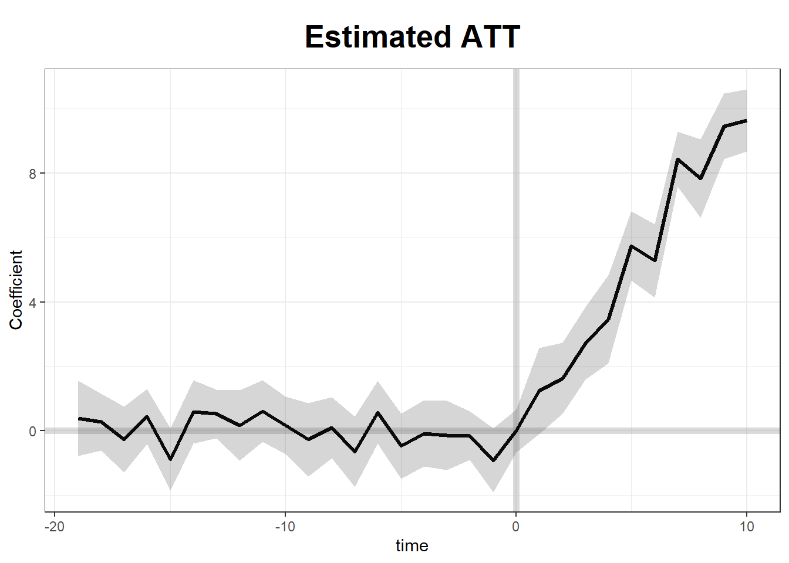
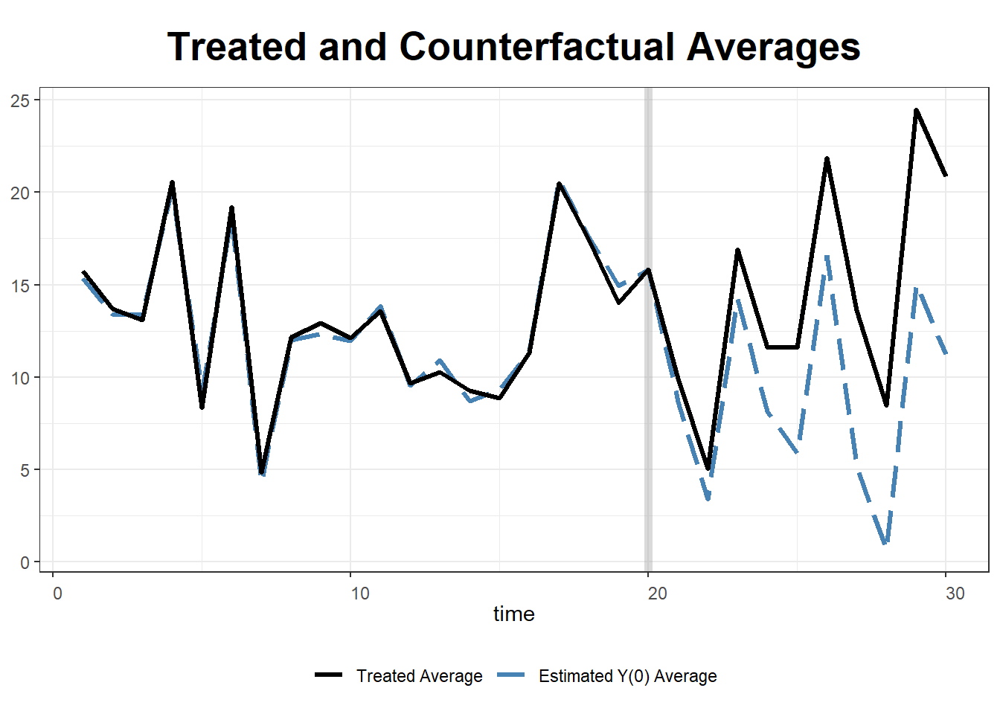
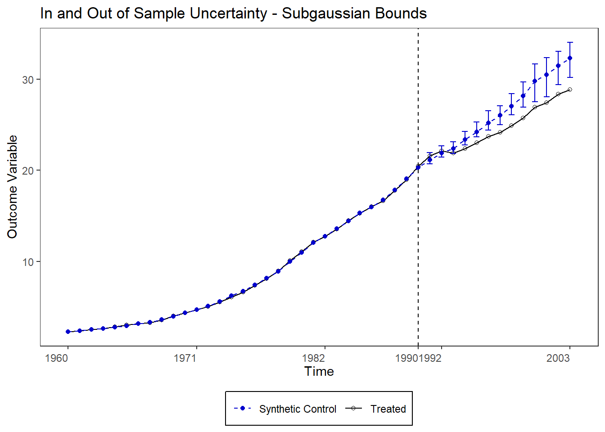

Take a matrix of realised (or actual) or observed) outcomes \[
\mathbf{Y}=\left(\begin{array}{ccccc}
Y_{11} & Y_{12} & Y_{13} & \ldots & Y_{1 T} \\
Y_{21} & Y_{22} & Y_{23} & \ldots & Y_{2 T} \\
Y_{31} & Y_{32} & Y_{33} & \ldots & Y_{3 T} \\
\vdots & \vdots & \vdots & \ddots & \vdots \\
Y_{N 1} & Y_{N 2} & Y_{N 3} & \ldots & Y_{N T}
\end{array}\right)
\] and a binary treatment matrix with block assignment, i.e. the units that get treated start treatment at the same time (no staggering) and stay treated (treatment is an absorbing state)
To get treatment effect estimate \(\hat{\tau}=Y_{N T}-\hat{Y}_{N T}(0)\), we need to impute/predict counterfactual outcomes for the periods in which treated units were treated. Traditional synthetic control has a single treated unit, \(Y_{Nt}\), and for simplicity we also restrict treatment to a single period, terminal time \(T\) (hence treatment only affects unit-period \(Y_{NT}\)).
So we want to predict the counterfactual outcome for our treated unit \(N\) in its only treated period, terminal time \(T\). This unit is treated (\(D=1\)) in time \(T\) but we want to estimate what its outcome \(Y\) would have been had the unit not been treated (\(D=0\)). To do this, we take a weighted average of the control units \(N-1\) at \(T\), using weights \(w_{i}\).
We choose \(w\) so that for all prior periods \(t=1, \ldots, T-1\) the weighted average of the outcome of the control units is approximately equal to the outcome of the treated unit \(N\): \[
\begin{gathered}
Y_{N t} \approx \sum_{i=1}^{N-1} w_{i} Y_{i t} \\
\text { and } w_{i} \geq 0, \sum_{i=1}^{N-1} w_{i}=1 .
\end{gathered}
\] weights are also constrained to be positive and add up to 1 (useful both for regularisation and explanation). These constraints also imply that our estimates are found exclusively via interpolation (no extrapolation).
You can view the (traditional) Abadie–Diamond–Hainmueller synthetic control method as a vertical regression problem (Doudchenko and Imbens, 2016; Ferman and Pinto, 2019), where you take
the row of outcomes of the treated unit in all pre-treatment periods, and regress it on rows of outcomes of control units before the treatment. Visually, \[
\left[\begin{array}{cccc}
Y_{i 1} & \ldots & Y_{i T-1} & Y_{i T} \\
\uparrow & \uparrow & \uparrow & \\
Y_{N 1} & \cdots & Y_{N T-1} & Y_{N T}
\end{array}\right]
\] You do this to estimate weights \(w_{i}\) so that you can in turn reach your goal of estimating \(Y_{NT}\)\[
\hat{Y}_{N T}(0)=\sum_{i=1}^{N-1} \hat{w}_{i} Y_{i T}
\] Formally, \(\hat{w}\) is found as a result of the following vertical regression (/as the solution of the following quadratic programming problem):
which in the traditional SCM version imposes restrictions \(w_{0}=0\), and the already mentioned \(w_i \geq 0, \sum_{i} w_{i}=1\).
The regression does not need to be an OLS regression, it can be a regularised regression too, i.e. a machine-learning type regression. This is particularly useful in cases where \(T-1\) (number of regressors) is large relative to \(N\) (number of observations). Typically, in such cases, the non-negativity restriction on \(w_{i}\) is dropped and replaced by other modelling choices— regularisation is achieved in other ways.
Notice that in a more general version where the treated periods are greater than one, you should replace \(T-1\) with \(T-\text{number of periods}\) in the vertical regression equation (Equation Equation 6.1).
6.1.3 Horizontal regression interpretation
We could, alternatively, see the final period \(T\) as a weighted average of other, past, time periods. This is the standard approach in the Unconfoundedness literature, where the focus is on settings where \(N \gg T\). Visually, \[
\left[\begin{array}{cccc}
Y_{i 1} & \cdots & Y_{i T-1} & \leftarrow Y_{i T} \\
Y_{N 1} & \cdots & Y_{N T-1} & Y_{N T}
\end{array}\right]
\] We are regressing the treated unit(s) last column(s) on the previous columns. Formally, the weights are calculated as follows: \[
\begin{align}
\hat{\phi}&=\min _{\phi} \sum_{i=1}^{N-1}\left(Y_{i T}-\phi_{0}-\sum_{t=1}^{T-1} \phi_{t} Y_{i t}\right)^{2} \\
&= \min_{\phi} \sum_{i=1}^{N-1} \left(Y_{i T} - \phi_{0} - \phi_{1} Y_{i 1} - \phi_{2} Y_{i 2}- \phi_{3} Y_{i 3} - \cdots - \phi_{T-1} Y_{i, T-1} \right)^{2} \notag
\end{align}
\] Notice that now the number of observations is \(N - 1\) and the number of regressors \(T\). Here, for each unit \(i\), the final period outcome is a time-weighted average of the past outcomes of that unit.
In other words, we estimate \(Y_{N T}(0)\) using fitted value \[
\widehat{Y}_{N T}=\widehat{\phi}_{0}+\sum_{t=1}^{T-1} \widehat{\phi}_{t} Y_{N t}
\] , so that our treatment effect is \(\widehat{\tau}=Y_{N T}-\widehat{Y}_{N T}\).
This is equivalent to DID with parallel trends once we impose the following assumptions (notice that they are different from the ones we made to turn vertical regression into SCM): \[
\begin{aligned}
\widehat{\phi}_{0} &=\bar{Y}_{1, \text { pre }}-\bar{Y}_{0, \text { pre }} \\
\widehat{\phi}_{t} &=\frac{1}{T-1}
\end{aligned}
\]
This makes horizontal regression particularly appealing in cases where we are not concerned with time-series issues, like time trend. If I have a couple of pre-treatment weeks of data, I might be happy to assume that in my treatment units, the only thing that makes their pre- and post-treatment outcomes differ is the treatment itself, or equivalently, that conditional on their pre-treatment outcomes, treatment assignment is as good as random.
6.1.4 Fixed Effects
Vertical regression assumes pre-treatment patterns between control units that are stable over time to impute the counterfactual post-treatment outcome of the treated unit, \(Y_{NT}(0)\) in our working example.
To impute
the counterfactual post-treatment outcome of the treated unit, horizontal regression assumes a relationship between pre- and post-treatment outcomes, and it assumes that it is stable across units.
Fixed effect models use both between-units and over-time patterns, but assumes the former is stable across units and the latter is stable over time.
A two-way fixed effect regression with nothing but fixed effects looks like this: \[
\begin{aligned}
&Y_{i t}(0)=\mu+\alpha_{i}+\beta_{t}+\varepsilon_{i t} \\
&\min _{\mu, \alpha, \beta} \sum_{(i, t) \mid(i, t) \neq(N, T)}\left(Y_{i t}-\mu-\alpha_{i}-\gamma_{t}\right)^{2}
\end{aligned}
\] We model the potential outcome directly, as a function of a constant and fixed effects.
6.2 Theory of Synthetic Control (Abadie, 2021)
We follow closely Abadie (2021). Assume that there are \(t=1, \cdots , T_0, \cdots , T\) periods, where periods up until \(T_0\) are pre-treatment and periods \(t > T_0\) are post treatment.
Then, in each period \(t>T_{0}\), the treatment effect on the treated unit (ATT) \(N\) is: \[
\tau_{N t}=Y_{N t}(1)-Y_{N t}(0) .
\] In practice, we already observe \(Y_{N t}(1)\)—we already observe our country after it got affected by a policy so that estimating the treatment effect requires us to only estimate \(Y_{1 t}(0)\): \[
\hat{\tau}_{N t}=Y_{N t}-\hat{Y}_{N t}(0) .
\] To estimate \(Y_{N t}(0)\), we build a syntetic version of our treated units (a synthetic control) by mixing a set of donor units\(N-1\)—e.g. some countries that are similar to our treated country. Formally, \[
\hat{Y}_{N t}(0)=\sum_{i=1}^{N-1} w_{i} Y_{i t}
\]
with weights \(w_{i} = w_{1}, \ldots, w_{N-1}\) positive and summing up to one
From Abadie (2021), with modified notation: ” For each unit, \(i\) , and time, \(t\) , we observe the outcome of interest, \(Y_{i t}\). For each unit, \(i\), we also observe a set of \(K\) predictors of the outcome, \(X_{1 i}, \ldots, X_{K i}\), which may include pre-intervention values of \(Y_{i t}\) and which are themselves unaffected by the intervention. ”
Notice how the is no time indexing on predictors \(X_{k i}\). This is what Athey means when she says that we are only using the differences between units to construct the counterfactual outcome of the treated unit after treatment. In Abadie and Gardeazabal (2003), when they have time-varying predictors, they average each over time, but I could not find this in the paper. They must be doing something though, as predictors are always treated as constant over time.
” The \(K \times 1\) vectors \(\mathbf{X}_{1}, \ldots, \mathbf{X}_{N}\) contain the values of the predictors for units \(i=1, \ldots, N\), respectively. The \(K \times (N-1)\) matrix, \(\mathbf{X}_{0}=\left[\mathbf{X}_{1} \cdots \mathbf{X}_{N-1}\right]\), collects the values of the predictors for the \(N-1\) untreated (or donor) units.
Abadie and Gardeazabal (2003) and Abadie, Diamond, and Hainmueller (2010) propose to choose weights \(\mathbf{W}^{*}=\left(w_{1}^{*}, \ldots, w_{N-1}^{*}\right)^{\prime}\) that minimise the Euclidean distance between the predictors of treated and untreated units in the pre-treatment periods, subject to the weights being positive and summing up to 1.
Formally, \[
\begin{align}
\min_{\boldsymbol{W}}\left\|\mathbf{X}_{1}-\mathbf{X}_{0} \boldsymbol{W}\right\|
&=\sqrt{\left(\mathbf{X}_{1}-\mathbf{X}_{0} \mathbf{W}\right)^{\prime} \mathbf{V}\left(\mathbf{X}_{1}-\mathbf{X}_{0} \mathbf{W}\right)} \\
&=\left(\sum _ { k = 1 } ^ { K } v _ { k } \left(X_{k N}-w_{1} X_{k 1}-\cdots\right.\right. \left.\left.-w_{N-1} X_{k N-1}\right)^{2}\right)^{1 / 2} \\
\end{align}
\]\[
\begin{align}
& \text{where } \mathcal{W}=\left\{\left(w_{1}, \ldots, w_{N-1}\right)^{\prime}\right. \text{subject to } &\hspace{5pt} w_{1} + \cdots + w_{N-1}=1, \\
& & \hspace{5pt} w_{i} \geq 0,\\
& & \text{with }i = 1, \ldots, N-1. \}
\end{align}
\]\(\mathbf{V}\) is a \((K \times K)\) symmetric and positive semidefinite matrix. It is another matrix of weights. Let me explain. \(\boldsymbol{W}\) regulates how much importance each donor unit (e.g. other EU countries) has in the newly created synthetic control (e.g. synthetic Basque country)—what share of the synthetic control was donated by that unit (notice the \(i\) index in \(w_{i}\), which stands for unit).
Instead, \(\mathbf{V}\) sets the importance that each predictor of donor units have in constructing the synthetic control. How is then \(\mathbf{V}=\{v_1 + \cdots + v_K\}\) chosen? So that it best predicts \(Y_{Nt}(0)\), in the sense that it minimises the Mean Squared Prediction Error (MSPE) between the pre-treatment outcome of the treated unit over time (\(Y_{Nt}\), \(t \leq T_{0}\)) and that of the synthetic unit over time, \(\sum_{i=}^{N} w_{i}(\mathbf{V}) Y_{i t}\). Formally, \(\mathbf{V}^*\) solves \[
\min_{\mathbf{V} \in \mathcal{V}} \sum_{t \in \mathcal{T}_{0}}\left(Y_{N t}-w_{1}(\boldsymbol{V}) Y_{1 t}-\cdots-w_{N-1}(\boldsymbol{V}) Y_{N-1 t}\right)^{2},
\] for some set \(\mathcal{T_0} \subseteq\left\{1,2, \ldots, T_{0}\right\}\) of pre-treatment periods, or equivalently, in matrix notation, \[
\min_{\mathbf{V}\in\mathcal{V}}=\left(\mathbf{Z}_{1}-\mathbf{Z}_{0} \mathbf{W^{*}(\mathbf{V})}\right)^{\prime} \left(\mathbf{Z}_{1}-\mathbf{Z}_{0} \mathbf{W^{*}}(\mathbf{V})\right) \\
\] where \(\mathcal{V}\) is the set of all nonnegative diagonal \((K \times K)\) matrices, and \(\mathbf{Z_1}\) and \(\mathbf{Z_0}\) are a vector of pre-treatment outcome values for the treated unit and a matrix of pre-treatment outcomes for the donor units. Finally, the final weights for the synthetic control are given by \(\mathbf{W}^{*}(\mathbf{V^{*}})\).
A warning from Abadie (2021); “If the relationship between the outcome variable and the explanatory variables in \(\mathbf{X}_{1}\) and \(\mathbf{X}_{0}\) is highly nonlinear and the support of the explanatory variables is large, interpolation biases may be severe.” This is to say that if the treated unit is something very different from a linear combination of donor units, and if the two are very different from each other, then the synthetic control is not good; it will not generate a post-treatment prediction close to the real unobservable counterfactual.
Then, the estimated treatment effect for the treated unit at time \(t=T_{0}+1, \ldots, T\) is \[
\hat{\tau}_{N t}=Y_{N t}-\sum_{i=1}^{N-1} w_{i}^{*} Y_{i t} .
\] choose \(\boldsymbol{V}\), such that the synthetic control \(\boldsymbol{W}(\boldsymbol{V})\) minimizes the mean squared prediction error (MSPE) of this synthetic control with respect to \(Y_{N t}(0)\) : \[
\sum_{t \in \mathcal{T}_{0}}\left(Y_{N t}-w_{1}(\boldsymbol{V}) Y_{1 t}-\cdots-w_{N-1}(\boldsymbol{V}) Y_{N-1 t}\right)^{2},
\] for some set \(\mathcal{T}_{0} \subseteq\left\{1,2, \ldots, T_{0}\right\}\) of pre-treatment periods.
Because we are solving a prediction problem, other approaches are possible, particularly of the machine-learning type. Abadie, Diamond, and Hainmueller (2015) propose a related method to choose \(v_{1}, \ldots, v_{K}\) via out-of-sample validation.
6.2.1 Quick Review of Mean Squared Error
MSPE is usually mentioned at the very start of Econometrics courses, when the conditional expectation function (CEF) is introduced. Indeed, for any predictor \(g(X)\), it can be shown that the conditional expectation function of \(g(X)\) is the best predictor, in the sense that it minimises the mean squared prediction error. In Hansen’s textbook, the term “MSPE” and “Mean Squared Error” (MSE) seem to be used interchangeably, but they can be used to apply the same concept of squared error to, respectively, predictors and estimators (see this) .
MSPE is the expected squared difference between your predictor’s prediction for a given value of \(X\), \(g(X_i)\), and the actual outcome at that point, \(Y_i\): \[
\operatorname{MSPE}(L)=E\left[\sum_{i=1}^{n}\left(g\left(X_{i}\right)-\hat{g}\left(X_{i}\right)\right)^{2}\right]
\] It is a way of measuring the quality of a predictor.
6.2.2 Sources of Bias
Abadie, Diamond, and Hainmueller (2015) derive bias bounds for the SCM estimator when \(Y_{Nt}(0)\) is generated by (i) a linear factor model, or (ii) a vector autoregressive model.
The synthetic control estimator, they show, is:
biased for a linear factor model (more interesting setting);
unbiased for a vector autoregressive model.
Focusing on linear factor models, they take form \[
\quad Y_{i t}(0)=\delta_{t}+\theta_{t} \mathbf{Z}_{i}+\lambda_{t} \mu_{i}+\varepsilon_{i t}
\tag{6.2}\] where \(\delta_{t}\) are time-specific effects (“fixed effects”), \(\mathbf{Z}_{i}\) is a vector of observed predictors of \(Y_{i t}(0)\), with coefficients \(\theta_{t}\), and \(\mu_{i}\) is a vector of unobserved predictors of \(Y_{i t}(0)\), with coefficients \(\lambda_{t}\). Finally, \(\varepsilon_{i t}\) is zero-mean individual transitory shocks.
If the data-generating process follows Equation Equation 6.2, then the bias of SCM is exacerbated by
a larger difference \(\mathbf{X}_{1} - \mathbf{X}_{0}\mathbf{W}^{*}\). If this is large, SCM is not recommended. This often happens i \(\varepsilon_{i t}\) is large.
a smaller number of pre-treatment periods, \(T_0\) (bias inversely related to size of \(T_{0}\)).
Without (1) though, even infinite \(T_0\) will be insufficient to avoid sizeable bias.
over-fitting, i.e. a deceivingly good fit (\(\mathbf{X}_{1} \approx \mathbf{X}_{0} \boldsymbol{W}^{*}\) and pre-treatment outcomes similar too) despite large bias. This can occur in presence of:
a small \(T_0\) paired with enough \(Var(\varepsilon_{i t})\)
large donor pool \(N\), if \(\mathbf{Z_i}\) and \(\mu_{i}\) are very different between donor units and treated unit. A small \(T_0\) makes the problem more severe.
this implies that the donor units must be chosen so that both observed and unobserved predictors for treated and donor units are similar.
the number of unobserved factors, i.e. the number of components in \(\mu_i\)
6.3 R Application of Synthetic Control
In this section, we explore the R package “synth” by replicating Abadie & Gardeazabal (2003). We follow the rich documentation and code examples provided on package’s website. In this context, the main advantage of using R is that it allows not only to implement the standard synthetic control estimator (which Stata can do too), but to take advantage of packages implementing the latest synthetic control estimators—and there are a few interesting ones.
“synth” is a great package. However, it does require to follow a certain data preparation procedure using function dataprep().
The documentation file recommends to follow these steps: 1. dataprep() for matrix-extraction 2. synth() for the construction of the synthetic control group 3. synth.tab(), gaps.plot(), and path.plot() to summarize the results
6.3.1 Toy Example
Code
library(Synth)data(synth.data)head(synth.data)
unit.num year name Y X1 X2 X3
1 2 1980 control.region.northeast 131.8 NA 21.5 NA
2 2 1981 control.region.northeast 128.7 0.2534060 24.1 NA
3 2 1982 control.region.northeast 127.4 0.2512521 23.8 NA
4 2 1983 control.region.northeast 128.0 0.2489048 21.6 NA
5 2 1984 control.region.northeast 123.1 0.2462865 23.9 17.9
6 2 1985 control.region.northeast 125.8 0.2434099 22.9 18.1
We start with a toy dataset that has 8 regions followed over time. We are given an outcome variable, time in years, a region identifier and 3 predictors.
Code
# create matrices from panel data that provide inputs for synth()dataprep.out<-dataprep(# specify dataframefoo = synth.data,# select predictorspredictors =c("X1", "X2", "X3"),# decide how to handle time-varying predictorspredictors.op ="mean",# select dependent variabledependent ="Y",# select unit identifier (numerical). If names are also identified using# a string variables, its name must be declared in "unit.names.variable".unit.variable ="unit.num",# select time variabletime.variable ="year",# specify what time ranges and operator to use for each predictorspecial.predictors =list(list("Y", 1991, "mean"),list("Y", 1985, "mean"),list("Y", 1980, "mean") ),# select treated unit using its numerical identifiertreatment.identifier =7,# select donor units using their numerical identifiercontrols.identifier =c(29, 2, 13, 17, 32, 38),# numeric vector identifying the pretreatment periods.# The function averages the predictors over this period.time.predictors.prior =c(1984:1989),# select the periods of the dependent variable over which the# mean squared prediction error (MSPE) between treated and# the synthetic control unit is minimized.time.optimize.ssr =c(1984:1990),# see note on top of "unit.variable"unit.names.variable ="name",# vector identifying the periods over which results are to# be plotted with gaps.plot and path.plot.time.plot =1984:1996 )
Now we can run on the prepped data the function “synth.out()” that finds optimal weights \(\mathbf{W^{*}(\mathbf{V^{*}})}\):
Code
synth.out <-synth(dataprep.out)
X1, X0, Z1, Z0 all come directly from dataprep object.
****************
searching for synthetic control unit
****************
****************
****************
MSPE (LOSS V): 4.714688
solution.v:
0.00490263 0.003884407 0.1972011 0.2707289 0.0007091301 0.5225738
solution.w:
0.0001407318 0.004851527 0.1697786 0.2173031 0.6079231 2.9419e-06
and display optimal unit weights \(\mathbf{W^{*}}\)
We can also combine the outputs of dataprep() and synth.out() to compute quantities such as the per-period difference between the treated unit and the synthetic control:
gaps.plot(synth.res = synth.out,dataprep.res = dataprep.out,Ylab =c("gap in real per-capita GDP (1986 USD, thousand)"),Xlab =c("year"),Ylim =c(-1.5,1.5),)

6.3.3 Inference
I am quite satisfied that we spent some time on randomisation inference, as it will serve us well here. The idea is simple: we run our SCM estimator on all possible permutations of treatment assignment (keeping the timing of the treatment fixed at the original value). Then we formally test whether the actual treatment assignment leads to post-treatment outcomes that are “extreme” compared to those of potential (or placebo) treatment assignments. Confidence intervals are built using this same idea.
Code
# install.packages("remotes")# remotes::install_github("bcastanho/SCtools")library(SCtools)cli::cli_h1("Placebos")placebos <-generate.placebos(# Specify prepped dataframe dataprep.out,# Specify synth output synth.out,# "Precision setting for the ipop optimization# routine". Default of 5, which is the max.Sigf.ipop =5)
X1, X0, Z1, Z0 all come directly from dataprep object.
****************
searching for synthetic control unit
****************
****************
****************
MSPE (LOSS V): 9.715113e-06
solution.v:
0.1591683 0.09208837 0.0886493 0.09652814 0.03575998 0.1048829 0.01652088 0.1323058 0.03034101 0.116946 0.08252605 0.006903057 0.03738034
solution.w:
3.533e-07 1.2e-08 0.07050948 0.09547165 6.18e-08 1.793e-07 0.08208709 2.1594e-06 4.11107e-05 0.6073438 1.0387e-06 0.04177268 0.1027699 2.221e-07 3.505e-07
X1, X0, Z1, Z0 all come directly from dataprep object.
****************
searching for synthetic control unit
****************
****************
****************
MSPE (LOSS V): 0.000673572
solution.v:
0.0224424 0.0008713426 0.01114084 0.09783658 0.004869847 0.08724658 0.001304567 2.6292e-06 0.4707232 0.04373781 0.1471988 0.01518543 0.09743994
solution.w:
0.0001362742 0.0001359815 0.1544316 8.84626e-05 0.0001091333 0.002803296 3.89379e-05 7.446e-06 2.86137e-05 0.2328446 7.04667e-05 4.6594e-06 5.10417e-05 0.6092267 2.28327e-05
X1, X0, Z1, Z0 all come directly from dataprep object.
****************
searching for synthetic control unit
****************
****************
****************
MSPE (LOSS V): 0.0006892381
solution.v:
0.07051369 0.03438093 0.1169481 0.09124123 0.148465 0.09574565 0.0686843 0.08531608 0.07670359 0.0803403 8.67811e-05 0.06607926 0.06549512
solution.w:
1.453e-07 0.7564361 1.85e-08 0.1526065 7.7e-09 2.7222e-05 1.737e-07 0.09090498 1.63e-07 9.64e-08 1.877e-07 2.28668e-05 1.1428e-06 1.122e-07 2.439e-07
X1, X0, Z1, Z0 all come directly from dataprep object.
****************
searching for synthetic control unit
****************
****************
****************
MSPE (LOSS V): 0.14164
solution.v:
7.84388e-05 0.1411931 0.005074639 0.0003695878 0.0001410637 0.1441811 0.1036129 0.2383419 7.62301e-05 0.08421802 0.1749933 0.1036796 0.004040195
solution.w:
0.000329458 9.9769e-06 2.6e-09 0.1582641 1.40362e-05 2.5497e-06 1.35637e-05 0.449286 0.01278554 0.0003852895 2.00192e-05 0.3788639 1.7346e-06 1.60351e-05 7.7809e-06
X1, X0, Z1, Z0 all come directly from dataprep object.
****************
searching for synthetic control unit
****************
****************
****************
MSPE (LOSS V): 0.001323059
solution.v:
0.08095156 0.1141994 0.01660591 0.002534079 0.0695929 0.3659171 0.01824451 0.1032989 0.1095556 8.69526e-05 0.001159165 0.111497 0.006356846
solution.w:
1.41e-08 4.7752e-06 7.5894e-06 0.1713424 3.6533e-06 8.9255e-06 1.8093e-06 1.958e-07 2.9325e-06 0.2498812 8.4853e-06 1.3856e-06 0.578735 8.662e-07 6.719e-07
X1, X0, Z1, Z0 all come directly from dataprep object.
****************
searching for synthetic control unit
****************
****************
****************
MSPE (LOSS V): 7.829298e-05
solution.v:
0.08472248 0.07074392 0.03613354 0.004143408 0.2590285 0.2649847 0.09142931 0.001807713 0.04189152 0.01718393 0.05446338 0.02163412 0.05183345
solution.w:
6.5348e-06 1.10812e-05 0.4175669 0.001261402 0.06308619 1.3719e-06 2.5961e-06 0.09360902 0.4244228 3.8971e-06 2.1343e-06 1.10545e-05 8.6368e-06 4.2692e-06 2.1614e-06
X1, X0, Z1, Z0 all come directly from dataprep object.
****************
searching for synthetic control unit
****************
****************
****************
MSPE (LOSS V): 0.0002618833
solution.v:
7.908e-07 4.234e-07 0.04373064 0.03264315 0.02551078 0.2578741 0.01861243 0.1174074 0.2264197 0.1193037 0.001346873 0.09023912 0.0669109
solution.w:
2.24598e-05 0.0322862 0.03045329 2.45603e-05 0.08921406 1.61296e-05 1.5364e-06 1.012e-05 1.75155e-05 0.2620709 2.98037e-05 9.81362e-05 0.4785751 0.0002405856 0.1069396
X1, X0, Z1, Z0 all come directly from dataprep object.
****************
searching for synthetic control unit
****************
****************
****************
MSPE (LOSS V): 0.003582645
solution.v:
0.1620049 0.1048832 0.1425177 0.1573869 0.01082269 0.1061443 0.04704935 0.1477322 0.0361821 0.03212148 0.0005486479 0.01722376 0.03538292
solution.w:
8.313e-07 2.888e-07 2.8e-09 3.793e-07 4.53e-08 5.047e-07 1.289e-07 1.3748e-06 0.0001404179 0.6023698 0.1597612 2.6e-09 0.2374671 3.991e-07 0.0002574674
X1, X0, Z1, Z0 all come directly from dataprep object.
****************
searching for synthetic control unit
****************
****************
****************
MSPE (LOSS V): 0.0003093978
solution.v:
0.01405653 0.01342696 0.005037431 0.001792396 0.07939944 0.5166658 0.281674 0.08745683 9.4099e-06 1.64076e-05 1.97882e-05 0.0004392198 5.8367e-06
solution.w:
1.09272e-05 7.4858e-06 0.03591013 0.2715622 1.49049e-05 0.2574583 3.0584e-06 2.667e-06 2.53151e-05 2.2189e-06 4.9246e-06 0.4349737 1.81706e-05 3.5542e-06 2.4455e-06
X1, X0, Z1, Z0 all come directly from dataprep object.
****************
searching for synthetic control unit
****************
****************
****************
MSPE (LOSS V): 0.001542242
solution.v:
0.004999115 0.01656873 3.51289e-05 0.004547709 0.03709237 0.1852946 0.04560342 0.06574843 0.02205275 0.3026563 0.04760615 0.006594092 0.2612013
solution.w:
2.6518e-06 9.174e-07 1.599e-07 0.0004118991 6.2173e-06 0.4568597 7.742e-07 0.2875864 0.1203422 6.485e-07 1.6357e-06 0.1345668 0.0002032946 6.637e-07 1.61965e-05
X1, X0, Z1, Z0 all come directly from dataprep object.
****************
searching for synthetic control unit
****************
****************
****************
MSPE (LOSS V): 0.1146391
solution.v:
0.02943752 0.003063935 0.1235673 0.09922722 0.001697701 0.1498659 0.435855 0.05906121 0.01972734 5.5967e-05 0.02155974 0.007315031 0.0495661
solution.w:
1.196e-07 2.06e-08 4.3e-09 1.57e-08 6.7e-08 1.87e-08 7.78e-08 0.9999994 6.5e-09 2.11e-08 9.16e-08 1.2e-09 1.67e-08 3.93e-08 5.94e-08
X1, X0, Z1, Z0 all come directly from dataprep object.
****************
searching for synthetic control unit
****************
****************
****************
MSPE (LOSS V): 0.0004014083
solution.v:
1.75e-07 0.001554452 0.06431824 0.2071104 0.06238137 0.3533768 7.981e-07 0.0480277 7.642e-06 0.1230474 0.001532035 0.1386201 2.30065e-05
solution.w:
0.0009467356 0.001083229 0.01097409 0.0006992699 0.08707848 0.08882073 0.1902425 0.3909272 0.0007014868 0.001730131 0.2249462 1.32594e-05 0.0003152589 0.0005380666 0.0009833685
X1, X0, Z1, Z0 all come directly from dataprep object.
****************
searching for synthetic control unit
****************
****************
****************
MSPE (LOSS V): 0.721094
solution.v:
0.05689619 0.03643493 0.0523677 0.1594543 0.1593454 0.09316946 0.1296922 0.01071169 4.16772e-05 0.008427199 0.106684 0.006861612 0.1799137
solution.w:
1.963e-07 1.508e-07 1.214e-07 2.155e-07 5.961e-07 2.32e-08 2.11e-07 2.31e-08 0.9999955 1.306e-07 2.6e-09 9.95e-08 2.251e-07 1.8304e-06 6.314e-07
X1, X0, Z1, Z0 all come directly from dataprep object.
****************
searching for synthetic control unit
****************
****************
****************
MSPE (LOSS V): 0.001909943
solution.v:
0.1172076 0.1559986 0.07769349 0.08024777 1.61519e-05 0.07818109 0.07094563 0.1652966 0.006992278 0.02393852 0.04869359 0.1087001 0.06608859
solution.w:
6.6666e-06 6.15093e-05 0.1162993 1.38275e-05 0.6002431 3.4074e-06 8.50319e-05 0.2831351 1.14133e-05 2.4867e-05 1.13959e-05 4.38581e-05 3.24663e-05 9.1058e-06 1.88888e-05
X1, X0, Z1, Z0 all come directly from dataprep object.
****************
searching for synthetic control unit
****************
****************
****************
MSPE (LOSS V): 0.0005087628
solution.v:
0.003660082 0.005745519 0.07477077 0.2682126 0.0009313803 0.01429884 0.001258538 0.1631885 0.001698029 0.0002157959 0.3185338 0.02139824 0.1260879
solution.w:
2.23442e-05 0.00251163 0.0002183416 3.70724e-05 3.21579e-05 0.05808657 0.0009553883 1.90812e-05 1.96359e-05 1.85453e-05 1.63125e-05 2.05744e-05 0.08491498 5.87307e-05 0.8530686
X1, X0, Z1, Z0 all come directly from dataprep object.
****************
searching for synthetic control unit
****************
****************
****************
MSPE (LOSS V): 0.0006882586
solution.v:
0.1579265 0.1435095 0.02510101 0.009802471 0.007375971 0.13902 0.01935686 0.1373007 0.1086847 0.000216304 0.0681037 0.1012709 0.08233127
solution.w:
7.6571e-06 5.2957e-06 3.506e-07 4.336e-06 3.3442e-06 -2e-10 0.06032471 0.0648049 3.0173e-06 8.9257e-06 0.0001261212 9.19662e-05 2.509e-06 3.5867e-06 0.8746133
Code
plot_placebos(placebos)

Code
#
This is a useful graph, which can help getting a grasp of whether the treatment effect seems extreme. We also want a formal test though (we follow Firpo & Possebom, 2018’s exposition). This is where the ratio mean squared prediction error (RMSPE) comes in: \[
R M S P E_{i}:=\frac{\sum_{t=T_{0}+1}^{T}\left(Y_{i, t}-\widehat{Y_{i, t}(0)}\right)^{2} /\left(T-T_{0}\right)}{\sum_{t=1}^{T_{0}}\left(Y_{i, t}-\widehat{Y_{i, t}(0)}\right)^{2} / T_{0}}
\] where the numerator is the post-treatment MSPE of unit \(i\) and the denominator is the pre-treatment MSPE of that same unit.
With this statistic, we can now calculate the following exact p-value, \[
p:=\frac{\sum_{j=1}^{N} \mathbb{I}\left[R M S P E_{i} \geq R M S P E_{N}\right]}{N}
\] where \(\mathbb{I}[\mathbf{A}]\) is an indicator function. We use the above statistic to test the sharp null \[
H_{0}: Y_{i, t}(1)=Y_{i, t}(0) \text { for each region } i \in\{1, \ldots, N\} \text { and time period } t \in\{1, \ldots, T\}
\] which will or will not be rejected based on a pre-set significance level, such as the traditional value of \(\alpha=0.1\).
SCtools::mspe.test() and SCtools::mspe.plot() replaced by scpi
The mspe.test() and mspe.plot() functions in the SCtools package are known to produce incorrect results (e.g., the RMSPE test and histogram do not match the values reported in Firpo and Possebom, 2018, despite the placebo plot being correct). These bugged functions have been replaced below by the scpi package (Cattaneo, Feng, and Titiunik, 2021), which provides formal prediction intervals and uncertainty quantification for synthetic control estimators with rigorous theoretical guarantees. Unlike the permutation-based p-values from SCtools, scpi constructs prediction intervals that account for both in-sample uncertainty (estimation of the weights) and out-of-sample uncertainty (prediction of the counterfactual), yielding inference that does not rely solely on the sharp null of zero effects for all units.
Code
library(scpi)# scpi provides prediction intervals for synthetic control# It uses the same Basque country data (included in the package)data("scpi_germany")# Prepare data for scpidf <- scpi_germany# Run SC estimation with prediction intervalsscpi_out <-scdata(df,id.var ="country",time.var ="year",outcome.var ="gdp",period.pre = (1960:1990),period.post = (1991:2003),unit.tr ="West Germany",unit.co =setdiff(unique(df$country), "West Germany"),constant =TRUE,cointegrated.data =TRUE)# Estimate with prediction intervalsscpi_est <-scpi(scpi_out,sims =200,cores =1)
---------------------------------------------------------------
Estimating Weights...
Quantifying Uncertainty
Treated unit 1: 20/200 iterations completed (10%)
Treated unit 1: 40/200 iterations completed (20%)
Treated unit 1: 60/200 iterations completed (30%)
Treated unit 1: 80/200 iterations completed (40%)
Treated unit 1: 100/200 iterations completed (50%)
Treated unit 1: 120/200 iterations completed (60%)
Treated unit 1: 140/200 iterations completed (70%)
Treated unit 1: 160/200 iterations completed (80%)
Treated unit 1: 180/200 iterations completed (90%)
Treated unit 1: 200/200 iterations completed (100%)
Code
# Plot with prediction intervalsscplot(scpi_est)
$plot_out_gau

$plot_out_ls

$plot_out_qr

6.4 Modern Extensions
The original synthetic control method of Abadie, Diamond, and Hainmueller has been enormously influential, but it has well-known limitations: it requires near-perfect pre-treatment fit, it provides no built-in uncertainty quantification beyond placebo tests, and it applies only to settings with a single treated unit and a single treatment adoption date. A wave of recent methodological work addresses each of these shortcomings. We briefly survey three of the most important developments.
6.4.1 Augmented Synthetic Control
A key practical limitation of the standard SCM is that when the synthetic control cannot closely match the treated unit in the pre-treatment period, the resulting treatment effect estimates may be biased. Ben-Michael, Feller, and Rothstein (2021) propose the augmented synthetic control method (ASCM), which combines the standard SCM weights with an outcome model—typically ridge regression—to correct for imperfect pre-treatment fit. The idea is analogous to augmented inverse probability weighting (AIPW) in the cross-sectional treatment effects literature: the outcome model “de-biases” the weighted estimator when the weights alone cannot achieve exact balance.
The key insight is that ASCM reduces to standard SCM when pre-treatment fit is exact, but provides bias correction when it is not. The degree of regularisation in the outcome model (controlled by a ridge penalty parameter) trades off bias correction against additional variance. Ben-Michael et al. (2021) provide a data-driven procedure for choosing this penalty. In practice, ASCM tends to produce estimates that are more robust to specification choices than standard SCM, particularly in settings where the donor pool is small or the treated unit is an outlier on some pre-treatment characteristics.
The augsynth R package implements ASCM along with several related estimators, including the multi-treatment-period extension multisynth (Ben-Michael, Feller, and Rothstein, 2022) for staggered adoption designs. The package provides a simpler formula-based interface compared to the Synth package.
Code
library(augsynth)# augsynth uses a formula interface rather than the dataprep() workflow.# We use the Basque country data in long panel format with a binary treatment indicator.data(basque, package ="Synth")basque_panel <- basquebasque_panel$treated <-ifelse(basque_panel$regionno ==17& basque_panel$year >=1970, 1, 0)asyn <-augsynth(gdpcap ~ treated,unit = regionno,time = year,data = basque_panel,progfunc ="ridge",scm =TRUE)summary(asyn)
# The progfunc argument controls the outcome model used for bias correction:# "ridge" (default), "gsyn" (generalized synthetic control),# "mcp" (matrix completion), "none" (standard SCM, no augmentation).# Setting scm = TRUE ensures the unit weights are non-negative and sum to one,# as in the standard SCM. Setting scm = FALSE relaxes these constraints.
6.4.2 Generalized Synthetic Control
Xu (2017) proposes the generalized synthetic control method (GSC), which takes a fundamentally different approach to constructing counterfactuals. Rather than finding a weighted combination of donor units, GSC estimates an interactive fixed effects model (also known as a factor model) from the control group data and then projects the treated unit’s counterfactual outcome using those estimated latent factors. The model takes the form \(Y_{it}(0) = \delta_t + \mathbf{X}_{it}\beta + \lambda_i' f_t + \varepsilon_{it}\), where \(f_t\) are common latent factors and \(\lambda_i\) are unit-specific factor loadings. The number of factors is selected via cross-validation, making the method adaptive to the complexity of the underlying data-generating process.
A key advantage of GSC over the standard SCM is that it handles multiple treated units natively—there is no need to run the analysis one treated unit at a time and then aggregate. Moreover, GSC does not impose the convex hull restriction (non-negative weights summing to one), which means the counterfactual is not constrained to lie within the convex hull of the donor units. This can be important when the treated unit is an outlier on some dimensions, a setting where traditional SCM is known to struggle.
The gsynth R package implements GSC with both parametric and nonparametric bootstrap inference, producing standard errors and confidence intervals for the average treatment effect on the treated. The package uses a formula interface and handles unbalanced panels, making it straightforward to apply in practice.
Code
library(gsynth)# gsynth uses a formula interface and handles multiple treated units# Example with simulated data (gsynth includes simdata)data(gsynth)# Estimate generalized synthetic controlout <-gsynth(Y ~ D + X1 + X2,data = simdata,index =c("id", "time"),force ="two-way",CV =TRUE, # cross-validate number of factorsr =c(0, 5), # range for number of factorsse =TRUE, # compute standard errorsinference ="parametric",nboots =1000,parallel =FALSE)
Cross-validating ...
r = 0; sigma2 = 1.84865; IC = 1.02023; PC = 1.74458; MSPE = 2.37280
r = 1; sigma2 = 1.51541; IC = 1.20588; PC = 1.99818; MSPE = 1.71743
r = 2; sigma2 = 0.99737; IC = 1.16130; PC = 1.69046; MSPE = 1.14540*
r = 3; sigma2 = 0.94664; IC = 1.47216; PC = 1.96215; MSPE = 1.15032
r = 4; sigma2 = 0.89411; IC = 1.76745; PC = 2.19241; MSPE = 1.21397
r = 5; sigma2 = 0.85060; IC = 2.05928; PC = 2.40964; MSPE = 1.23876
r* = 2
Simulating errors .............
Bootstrapping ...
..........
Code
plot(out, type ="gap")

Code
plot(out, type ="ct") # counterfactual plot

6.4.3 Synthetic Difference-in-Differences
Arkhangelsky, Athey, Hirshberg, Imbens, and Pischke (2021) propose synthetic difference-in-differences (SDID), a method that bridges traditional DID and SCM. The key observation is that DID re-weights time periods equally but does not re-weight units, while SCM re-weights units but does not re-weight time periods. SDID re-weights both: it finds unit weights (as in SCM) so that the weighted control units match the treated unit’s pre-treatment trajectory, and it also finds time weights so that the weighted pre-treatment periods match the post-treatment period in the control group. This double-weighting makes SDID more robust than either DID or SCM alone, particularly when parallel trends holds only approximately or when the donor pool is heterogeneous.
The synthdid R package implements SDID and provides placebo-based variance estimators. We do not develop SDID further here, as it is covered in the Difference-in-Differences chapter alongside other modern DID extensions. The important point for SCM practitioners is that SDID offers a principled middle ground when neither pure parallel trends nor pure SCM interpolation is entirely credible.
6.4.4 Conformal Inference for Synthetic Control
The placebo-based inference approach described above has the advantage of being intuitive and transparent, but it relies on the assumption that the treatment effect is zero for all placebo units—an assumption that may be implausible when there are spillovers or when some control units are themselves affected by related policies. Chernozhukov, Wuthrich, and Zhu (2021) propose conformal inference methods for synthetic control that provide exact, finite-sample coverage guarantees under weaker assumptions. Their approach constructs prediction intervals for the counterfactual outcome by inverting a conformal test, which controls size in finite samples without requiring the sharp null of zero treatment effects for all units. The method complements the standard placebo approach and is especially valuable in settings where the number of donor units is small, making the permutation distribution coarse.
More concretely, the key idea behind conformal inference in this setting is exchangeability of residuals. Under the null hypothesis that the treatment has no effect, the residuals from the synthetic control fit for the treated unit should be exchangeable with the residuals from the placebo fits for donor units. Conformal inference constructs prediction sets by checking whether adding the treated unit’s post-treatment outcome to the distribution of control residuals produces a value that is “surprising”—that is, whether the treated unit’s residual falls in the tails of the distribution formed by the control residuals. If the treated residual is extreme relative to the control residuals, this constitutes evidence against the null. The resulting p-values and confidence sets have exact finite-sample validity under the exchangeability assumption, without requiring asymptotic approximations.
A major advantage of conformal inference over the standard placebo test is that it does not require the sharp null hypothesis that the treatment effect is exactly zero for all units in all periods. The placebo test described in Section 6.3 tests \(H_0: Y_{it}(1) = Y_{it}(0)\) for every unit \(i\) and period \(t\)—a very strong assumption. Conformal inference, by contrast, can test hypotheses about the treated unit alone, making it valid even when some donor units experience spillovers or are affected by related policies. This is a substantively important distinction in many empirical applications where the sharp null is implausible.
The scpi package (Cattaneo, Feng, and Titiunik, 2021) implements both prediction intervals and conformal-type inference for synthetic control methods. The prediction intervals produced by scpi account for two distinct sources of uncertainty: in-sample uncertainty from estimating the synthetic control weights, and out-of-sample uncertainty from predicting the counterfactual outcome. This dual uncertainty quantification provides a more complete picture of inferential uncertainty than either placebo tests or simple prediction intervals alone.
Code
library(scpi)# Continuing from the scpi_out object above# scpi automatically provides prediction intervals# which are the conformal-type uncertainty quantification# For in-sample uncertainty:scpi_est_insample <-scpi(scpi_out,sims =200,cores =1,e.method ="gaussian")
---------------------------------------------------------------
Estimating Weights...
Quantifying Uncertainty
Treated unit 1: 20/200 iterations completed (10%)
Treated unit 1: 40/200 iterations completed (20%)
Treated unit 1: 60/200 iterations completed (30%)
Treated unit 1: 80/200 iterations completed (40%)
Treated unit 1: 100/200 iterations completed (50%)
Treated unit 1: 120/200 iterations completed (60%)
Treated unit 1: 140/200 iterations completed (70%)
Treated unit 1: 160/200 iterations completed (80%)
Treated unit 1: 180/200 iterations completed (90%)
Treated unit 1: 200/200 iterations completed (100%)
Code
# The prediction intervals account for both# estimation uncertainty and prediction uncertaintyscplot(scpi_est_insample)
$plot_out

Further Reading
Foundational references:
Abadie and Gardeazabal (2003). “The Economic Costs of Conflict: A Case Study of the Basque Country.” American Economic Review.
Abadie, Diamond, and Hainmueller (2010). “Synthetic Control Methods for Comparative Case Studies.” JASA.
Abadie (2021). “Using Synthetic Controls: Feasibility, Data Requirements, and Methodological Aspects.” Journal of Economic Literature.
Modern extensions:
Ben-Michael, Feller, and Rothstein (2021). “The Augmented Synthetic Control Method.” JASA. R package: augsynth.
Ben-Michael, Feller, and Rothstein (2022). “Synthetic Controls with Staggered Adoption.” JRSS-B. R package: augsynth::multisynth.
Arkhangelsky, Athey, Hirshberg, Imbens, and Pischke (2021). “Synthetic Difference-in-Differences.” AER. R package: synthdid.
Xu (2017). “Generalized Synthetic Control Method: Causal Inference with Interactive Fixed Effects Models.” Political Analysis. R package: gsynth.
Athey, Bayati, Doudchenko, Imbens, and Khosravi (2021). “Matrix Completion Methods for Causal Panel Data Models.” JASA.
Inference:
Firpo and Possebom (2018). “Synthetic Control Method: Inference, Sensitivity Analysis and Confidence Sets.” JBES.
Chernozhukov, Wuthrich, and Zhu (2021). “An Exact and Robust Conformal Inference Method for Counterfactual and Synthetic Controls.” JASA.
Cattaneo, Feng, and Titiunik (2021). “Prediction Intervals for Synthetic Control Methods.” JASA. R package: scpi.
Source Code
# Synthetic Control Methods## A General Framework for Panel Data EconometricsFollows [Athey's lecture](https://www.youtube.com/watch?v=r2DzGAigTl4) at Stanford's Online Causal Inference Seminar, and David Schn¨oholzer's [lecture slides](https://www.dropbox.com/s/zzlbppgvzxo9b9e/Econometrics%20II%20-%20Lecture%2011.pdf?dl=0).### SetupTake a matrix of realised (or *actual*) or *observed*) outcomes$$\mathbf{Y}=\left(\begin{array}{ccccc}Y_{11} & Y_{12} & Y_{13} & \ldots & Y_{1 T} \\Y_{21} & Y_{22} & Y_{23} & \ldots & Y_{2 T} \\Y_{31} & Y_{32} & Y_{33} & \ldots & Y_{3 T} \\\vdots & \vdots & \vdots & \ddots & \vdots \\Y_{N 1} & Y_{N 2} & Y_{N 3} & \ldots & Y_{N T}\end{array}\right)$$and a binary treatment matrix with block assignment, i.e. the units that get treated start treatment at the same time (no staggering) and stay treated (treatment is an absorbing state)$$\mathbf{D}=\left(\begin{array}{cccccc}0 & 0 & 0 & \ldots & 0 & 0 \\0 & 0 & 0 & \ldots & 0 & 0 \\0 & 0 & 0 & \ldots & 0 & 0 \\\vdots & \vdots & \vdots & \ddots & \vdots & \vdots \\0 & 0 & 0 & \ldots & 1 & 1 \\0 & 0 & 0 & \ldots & 1 & 1\end{array}\right)$$To get treatment effect estimate $\hat{\tau}=Y_{N T}-\hat{Y}_{N T}(0)$, we need to impute/predict counterfactual outcomes for the periods in which treated units were treated.Traditional synthetic control has a single treated unit, $Y_{Nt}$, and for simplicity we also restrict treatment to a single period, terminal time $T$ (hence treatment only affects unit-period $Y_{NT}$).So we want to predict the counterfactual outcome for our treated unit $N$ in its only treated period, terminal time $T$. This unit is treated ($D=1$) in time $T$ but we want to estimate what its outcome $Y$ would have been had the unit not been treated ($D=0$). To do this, we take a weighted average of the control units $N-1$ at $T$, using weights $w_{i}$.$$\hat{Y}_{N T}(D=0)=\sum_{i=1}^{N-1} w_{i} Y_{i T}$$What kind of weights though?We choose $w$ so that for all prior periods $t=1, \ldots, T-1$ the weighted average of the outcome of the control units is approximately equalto the outcome of the treated unit $N$:$$\begin{gathered}Y_{N t} \approx \sum_{i=1}^{N-1} w_{i} Y_{i t} \\\text { and } w_{i} \geq 0, \sum_{i=1}^{N-1} w_{i}=1 .\end{gathered}$$weights are also constrained to be positive and add up to 1 (useful both for regularisation and explanation). These constraints also imply that our estimates are found exclusively via interpolation (no extrapolation).### Vertical regression interpretation (Doudchenko-Imbens)You can view the (traditional) Abadie–Diamond–Hainmueller synthetic control method as a vertical regression problem (Doudchenko and Imbens, 2016; Ferman and Pinto, 2019), where you take the row of outcomes of the treated unit in all pre-treatment periods, and regress it on rows of outcomes of control units before the treatment. Visually,$$\left[\begin{array}{cccc}Y_{i 1} & \ldots & Y_{i T-1} & Y_{i T} \\\uparrow & \uparrow & \uparrow & \\Y_{N 1} & \cdots & Y_{N T-1} & Y_{N T}\end{array}\right]$$You do this to estimate weights $w_{i}$ so that you can in turn reach your goal of estimating $Y_{NT}$$$\hat{Y}_{N T}(0)=\sum_{i=1}^{N-1} \hat{w}_{i} Y_{i T}$$Formally, $\hat{w}$ is found as a result of the following vertical regression (/as the solution of the following quadratic programming problem):$$\begin{aligned}\hat{w} &= \min_{w} \sum_{t=1}^{T-1}\left(Y_{N t} - w_{0} -\sum_{i=1}^{N-1} w_{i} Y_{i t}\right)^{2} \\&= \min_{w} \sum_{t=1}^{T-1} \left(Y_{N t} - w_{0} - w_{1} Y_{1 t} - w_{2} Y_{2 t}- w_{3} Y_{3 t} - \cdots - w_{N-1} Y_{N-1, t} \right)^{2}\end{aligned}$$ {#eq-scm}which in the traditional SCM version imposes restrictions $w_{0}=0$, and the already mentioned $w_i \geq 0, \sum_{i} w_{i}=1$.The regression does not need to be an OLS regression, it can be a regularised regression too, i.e. a machine-learning type regression. This is particularly useful in cases where $T-1$ (number of regressors) is large relative to $N$ (number of observations). Typically, in such cases, the non-negativity restriction on $w_{i}$ is dropped and replaced by other modelling choices--- regularisation is achieved in other ways.Notice that in a more general version where the treated periods are greater than one, you should replace $T-1$ with $T-\text{number of periods}$ in the vertical regression equation (Equation @eq-scm).### Horizontal regression interpretationWe could, alternatively, see the final period $T$ as a weighted average of other, past, time periods. This is the standard approach in the Unconfoundedness literature, where the focus is on settings where $N \gg T$.Visually,$$\left[\begin{array}{cccc}Y_{i 1} & \cdots & Y_{i T-1} & \leftarrow Y_{i T} \\Y_{N 1} & \cdots & Y_{N T-1} & Y_{N T}\end{array}\right]$$We are regressing the treated unit(s) last column(s) on the previous columns.Formally, the weights are calculated as follows:$$\begin{align}\hat{\phi}&=\min _{\phi} \sum_{i=1}^{N-1}\left(Y_{i T}-\phi_{0}-\sum_{t=1}^{T-1} \phi_{t} Y_{i t}\right)^{2} \\&= \min_{\phi} \sum_{i=1}^{N-1} \left(Y_{i T} - \phi_{0} - \phi_{1} Y_{i 1} - \phi_{2} Y_{i 2}- \phi_{3} Y_{i 3} - \cdots - \phi_{T-1} Y_{i, T-1} \right)^{2} \notag\end{align}$$Notice that now the number of observations is $N - 1$ and the number of regressors $T$.Here, for each unit $i$, the final period outcome is a time-weighted average of the past outcomes of that unit.In other words, we estimate $Y_{N T}(0)$ using fitted value$$\widehat{Y}_{N T}=\widehat{\phi}_{0}+\sum_{t=1}^{T-1} \widehat{\phi}_{t} Y_{N t}$$, so that our treatment effect is $\widehat{\tau}=Y_{N T}-\widehat{Y}_{N T}$.This is equivalent to DID with parallel trends once we impose the following assumptions (notice that they are different from the ones we made to turn vertical regression into SCM):$$\begin{aligned}\widehat{\phi}_{0} &=\bar{Y}_{1, \text { pre }}-\bar{Y}_{0, \text { pre }} \\\widehat{\phi}_{t} &=\frac{1}{T-1}\end{aligned}$$This makes horizontal regression particularly appealing in cases where we are not concerned with time-series issues, like time trend. If I have a couple of pre-treatment weeks of data, I might be happy to assume that in my treatment units, the only thing that makes their pre- and post-treatment outcomes differ is the treatment itself, or equivalently, that conditional on their pre-treatment outcomes, treatment assignment is as good as random.### Fixed EffectsVertical regression assumes pre-treatment patterns *between control units* that are *stable over time* to impute the counterfactual post-treatment outcome of the treated unit, $Y_{NT}(0)$ in our working example.To impute the counterfactual post-treatment outcome of the treated unit,horizontal regression assumes a relationship between *pre- and post-treatment* outcomes, and it assumes that it is *stable across units*.Fixed effect models use both between-units and over-time patterns, but assumes the former is *stable across units* and the latter is *stable over time*. A two-way fixed effect regression with nothing but fixed effects looks like this:$$\begin{aligned}&Y_{i t}(0)=\mu+\alpha_{i}+\beta_{t}+\varepsilon_{i t} \\&\min _{\mu, \alpha, \beta} \sum_{(i, t) \mid(i, t) \neq(N, T)}\left(Y_{i t}-\mu-\alpha_{i}-\gamma_{t}\right)^{2}\end{aligned}$$We model the potential outcome directly, as a function of a constant and fixed effects.## Theory of Synthetic Control (Abadie, 2021)We follow closely Abadie (2021).Assume that there are $t=1, \cdots , T_0, \cdots , T$ periods, where periods up until $T_0$ are pre-treatment and periods $t > T_0$ are post treatment.Then, in each period $t>T_{0}$, the treatment effect on the treated unit (ATT) $N$ is:$$\tau_{N t}=Y_{N t}(1)-Y_{N t}(0) .$$In practice, we already observe $Y_{N t}(1)$---we already observe our country after it got affected by a policy \textemdash so that estimating the treatment effect requires us to only estimate $Y_{1 t}(0)$:$$\hat{\tau}_{N t}=Y_{N t}-\hat{Y}_{N t}(0) .$$To estimate $Y_{N t}(0)$, we build a syntetic version of our treated units (a **synthetic control**) by mixing a set of **donor units** $N-1$---e.g. some countries that are similar to our treated country. Formally,$$\hat{Y}_{N t}(0)=\sum_{i=1}^{N-1} w_{i} Y_{i t}$$with weights $w_{i} = w_{1}, \ldots, w_{N-1}$ positive and summing up to oneFrom Abadie (2021), with modified notation:"For each unit, $i$ , and time, $t$ , we observe the outcome of interest, $Y_{i t}$. For each unit, $i$, we also observe a set of $K$ predictors of the outcome, $X_{1 i}, \ldots, X_{K i}$, which may include pre-intervention values of $Y_{i t}$ and which are themselves unaffected by the intervention. "Notice how the is no time indexing on predictors $X_{k i}$. This is what Athey means when she says that we are only using the differences **between** units to construct the counterfactual outcome of the treated unit after treatment.In Abadie and Gardeazabal (2003), when they have time-varying predictors, they average each over time, but I could not find this in the paper. They must be doing something though, as predictors are always treated as constant over time."The $K \times 1$ vectors $\mathbf{X}_{1}, \ldots, \mathbf{X}_{N}$ contain the values of the predictors for units $i=1, \ldots, N$, respectively. The $K \times (N-1)$ matrix, $\mathbf{X}_{0}=\left[\mathbf{X}_{1} \cdots \mathbf{X}_{N-1}\right]$, collects the values of the predictors for the $N-1$ untreated (or **donor**) units. Abadie and Gardeazabal (2003) and Abadie, Diamond, and Hainmueller (2010) propose to choose weights $\mathbf{W}^{*}=\left(w_{1}^{*}, \ldots, w_{N-1}^{*}\right)^{\prime}$ that minimise the Euclidean distance between the predictors of treated and untreated units in the pre-treatment periods, subject to the weights being positive and summing up to 1.Formally,$$\begin{align}\min_{\boldsymbol{W}}\left\|\mathbf{X}_{1}-\mathbf{X}_{0} \boldsymbol{W}\right\|&=\sqrt{\left(\mathbf{X}_{1}-\mathbf{X}_{0} \mathbf{W}\right)^{\prime} \mathbf{V}\left(\mathbf{X}_{1}-\mathbf{X}_{0} \mathbf{W}\right)} \\&=\left(\sum _ { k = 1 } ^ { K } v _ { k } \left(X_{k N}-w_{1} X_{k 1}-\cdots\right.\right. \left.\left.-w_{N-1} X_{k N-1}\right)^{2}\right)^{1 / 2} \\\end{align}$$$$\begin{align}& \text{where } \mathcal{W}=\left\{\left(w_{1}, \ldots, w_{N-1}\right)^{\prime}\right. \text{subject to } &\hspace{5pt} w_{1} + \cdots + w_{N-1}=1, \\& & \hspace{5pt} w_{i} \geq 0,\\& & \text{with }i = 1, \ldots, N-1. \}\end{align}$$$\mathbf{V}$ is a $(K \times K)$ symmetric and positive semidefinite matrix.It is another matrix of weights. Let me explain.$\boldsymbol{W}$ regulates how much importanceeach **donor unit** (e.g. other EU countries) has in the newly created synthetic control (e.g. synthetic Basque country)---what share of the synthetic control was donated by that unit (notice the $i$ index in $w_{i}$, which stands for unit). Instead, $\mathbf{V}$ sets the importance that each **predictor** of donor units have in constructing the synthetic control. How is then $\mathbf{V}=\{v_1 + \cdots + v_K\}$ chosen? So that it best predicts $Y_{Nt}(0)$, in the sense that it minimises the Mean Squared Prediction Error (MSPE) between the pre-treatment outcome of the treated unit over time ($Y_{Nt}$, $t \leq T_{0}$) and that of the synthetic unit over time,$\sum_{i=}^{N} w_{i}(\mathbf{V}) Y_{i t}$.Formally, $\mathbf{V}^*$ solves$$\min_{\mathbf{V} \in \mathcal{V}} \sum_{t \in \mathcal{T}_{0}}\left(Y_{N t}-w_{1}(\boldsymbol{V}) Y_{1 t}-\cdots-w_{N-1}(\boldsymbol{V}) Y_{N-1 t}\right)^{2},$$for some set $\mathcal{T_0} \subseteq\left\{1,2, \ldots, T_{0}\right\}$ of pre-treatment periods,or equivalently, in matrix notation,$$\min_{\mathbf{V}\in\mathcal{V}}=\left(\mathbf{Z}_{1}-\mathbf{Z}_{0} \mathbf{W^{*}(\mathbf{V})}\right)^{\prime} \left(\mathbf{Z}_{1}-\mathbf{Z}_{0} \mathbf{W^{*}}(\mathbf{V})\right) \\$$where $\mathcal{V}$ is the set of all nonnegative diagonal $(K \times K)$ matrices, and $\mathbf{Z_1}$ and $\mathbf{Z_0}$ are a vector of pre-treatment outcome values for the treated unit and a matrix of pre-treatment outcomes for the donor units. Finally, the final weights for the synthetic control are given by $\mathbf{W}^{*}(\mathbf{V^{*}})$.A warning from Abadie (2021); "If the relationship between the outcome variable and the explanatory variables in $\mathbf{X}_{1}$ and $\mathbf{X}_{0}$ is highly nonlinear and the support of the explanatory variables is large, *interpolation biases* may be severe."This is to say that if the treated unit is something very different from a linear combination of donor units, and if the two are very different from each other, then the synthetic control is not good; it will not generate a post-treatment prediction close to the real unobservable counterfactual. Then, the estimated treatment effect for the treated unit at time $t=T_{0}+1, \ldots, T$ is$$\hat{\tau}_{N t}=Y_{N t}-\sum_{i=1}^{N-1} w_{i}^{*} Y_{i t} .$$choose $\boldsymbol{V}$, such that the synthetic control $\boldsymbol{W}(\boldsymbol{V})$ minimizes the mean squared prediction error (MSPE) of this synthetic control with respect to $Y_{N t}(0)$ :$$\sum_{t \in \mathcal{T}_{0}}\left(Y_{N t}-w_{1}(\boldsymbol{V}) Y_{1 t}-\cdots-w_{N-1}(\boldsymbol{V}) Y_{N-1 t}\right)^{2},$$for some set $\mathcal{T}_{0} \subseteq\left\{1,2, \ldots, T_{0}\right\}$ of pre-treatment periods. Because we are solving a prediction problem, other approaches are possible, particularly of the machine-learning type. Abadie, Diamond, and Hainmueller (2015) propose a related method to choose $v_{1}, \ldots, v_{K}$ via out-of-sample validation. ### Quick Review of Mean Squared ErrorMSPE is usually mentioned at the very start of Econometrics courses, when the conditional expectation function (CEF) is introduced.Indeed, for any predictor $g(X)$, it can be shown that the conditional expectation function of $g(X)$ is the best predictor, in the sense that it minimises the mean squared prediction error.In Hansen's textbook, the term "MSPE" and "Mean Squared Error" (MSE) seem to be used interchangeably, but they can be used to apply the same concept of squared error to, respectively, predictors and estimators (see [this](https://stats.stackexchange.com/questions/20741/mean-squared-error-vs-mean-squared-prediction-error)).MSPE is the expected squared difference between your predictor's prediction for a given value of $X$, $g(X_i)$, and the actual outcome at that point,$Y_i$:$$\operatorname{MSPE}(L)=E\left[\sum_{i=1}^{n}\left(g\left(X_{i}\right)-\hat{g}\left(X_{i}\right)\right)^{2}\right]$$It is a way of measuring the quality of a predictor.### Sources of BiasAbadie, Diamond, and Hainmueller (2015) derive bias bounds for the SCM estimator when $Y_{Nt}(0)$ is generated by (i) a linear factor model, or (ii) a vector autoregressive model. The synthetic control estimator, they show, is: - **biased** for a linear factor model (more interesting setting); - **unbiased** for a vector autoregressive model.Focusing on linear factor models, they take form$$\quad Y_{i t}(0)=\delta_{t}+\theta_{t} \mathbf{Z}_{i}+\lambda_{t} \mu_{i}+\varepsilon_{i t}$$ {#eq-factor}where $\delta_{t}$ are time-specific effects ("fixed effects"), $\mathbf{Z}_{i}$ is a vector of observed predictors of $Y_{i t}(0)$, with coefficients $\theta_{t}$,and $\mu_{i}$ is a vector of unobserved predictors of $Y_{i t}(0)$, with coefficients $\lambda_{t}$. Finally, $\varepsilon_{i t}$ is zero-mean individual transitory shocks.If the data-generating process follows Equation @eq-factor, then the bias of SCM is exacerbated by1. a larger difference $\mathbf{X}_{1} - \mathbf{X}_{0}\mathbf{W}^{*}$. If this is large, SCM is not recommended. This often happens i $\varepsilon_{i t}$ is large.2. a smaller number of pre-treatment periods, $T_0$ (bias inversely related to size of $T_{0}$). * Without (1) though, even infinite $T_0$ will be insufficient to avoid sizeable bias.3. over-fitting, i.e. a deceivingly good fit ($\mathbf{X}_{1} \approx \mathbf{X}_{0} \boldsymbol{W}^{*}$ and pre-treatment outcomes similar too) despite large bias. This can occur in presence of: * a small $T_0$ paired with enough $Var(\varepsilon_{i t})$ * large donor pool $N$, if $\mathbf{Z_i}$ and $\mu_{i}$ are very different between donor units and treated unit. A small $T_0$ makes the problem more severe. - this implies that the donor units must be chosen so that both observed and unobserved predictors for treated and donor units are similar. * the number of unobserved factors, i.e. the number of components in $\mu_i$## R Application of Synthetic ControlIn this section, we explore the R package "synth" by replicating Abadie & Gardeazabal (2003). We follow the rich documentation and code examples provided on package's website.In this context, the main advantage of using R is that it allows not only to implement the standard synthetic control estimator (which Stata can do too), but to take advantage of packages implementing the latest synthetic control estimators---and there are a few interesting ones."synth" is a great package. However, it does require to follow a certain data preparation procedure using function dataprep().The documentation file recommends to follow these steps:1. dataprep() for matrix-extraction2. synth() for the construction of the synthetic control group3. synth.tab(), gaps.plot(), and path.plot() to summarize the results### Toy Example```{r}#| label: toy-load-data#| code-fold: true#| message: false#| warning: falselibrary(Synth)data(synth.data)head(synth.data)```We start with a toy dataset that has 8 regions followed over time. We are given an outcome variable, time in years, a region identifier and 3 predictors. ```{r}#| label: toy-dataprep#| code-fold: true#| message: false#| warning: false# create matrices from panel data that provide inputs for synth()dataprep.out<-dataprep(# specify dataframefoo = synth.data,# select predictorspredictors =c("X1", "X2", "X3"),# decide how to handle time-varying predictorspredictors.op ="mean",# select dependent variabledependent ="Y",# select unit identifier (numerical). If names are also identified using# a string variables, its name must be declared in "unit.names.variable".unit.variable ="unit.num",# select time variabletime.variable ="year",# specify what time ranges and operator to use for each predictorspecial.predictors =list(list("Y", 1991, "mean"),list("Y", 1985, "mean"),list("Y", 1980, "mean") ),# select treated unit using its numerical identifiertreatment.identifier =7,# select donor units using their numerical identifiercontrols.identifier =c(29, 2, 13, 17, 32, 38),# numeric vector identifying the pretreatment periods.# The function averages the predictors over this period.time.predictors.prior =c(1984:1989),# select the periods of the dependent variable over which the# mean squared prediction error (MSPE) between treated and# the synthetic control unit is minimized.time.optimize.ssr =c(1984:1990),# see note on top of "unit.variable"unit.names.variable ="name",# vector identifying the periods over which results are to# be plotted with gaps.plot and path.plot.time.plot =1984:1996 )```Now we can run on the prepped data the function "synth.out()" that finds optimal weights $\mathbf{W^{*}(\mathbf{V^{*}})}$:```{r}#| label: toy-synth#| code-fold: true#| message: false#| warning: falsesynth.out <-synth(dataprep.out)```and display optimal unit weights $\mathbf{W^{*}}$```{r}#| label: toy-weights-w#| code-fold: true#| message: false#| warning: falseround(synth.out$solution.w,2)```where the first column shows the numerical unit identifiers,and optimal predictor weights $\mathbf{V^{*}}$```{r}#| label: toy-weights-v#| code-fold: true#| message: false#| warning: falsesynth.out$solution.v```We can also combine the outputs of dataprep() and synth.out() to compute quantities such as the per-period difference between the treated unit and the synthetic control:```{r}#| label: toy-gaps#| code-fold: true#| message: false#| warning: falsegaps<- dataprep.out$Y1plot-( dataprep.out$Y0plot%*%synth.out$solution.w) ; gaps```Function synth.tab() can be handy, as it summarises the main useful information by constructing and printing four tables```{r}#| label: toy-tables#| code-fold: true#| message: false#| warning: falsesynth.tables <-synth.tab(dataprep.res = dataprep.out,synth.res = synth.out)print(synth.tables)```Finally, we can plot the outcomes of treated and synthetic units```{r}#| label: toy-pathplot#| code-fold: true#| message: false#| warning: falsepath.plot(dataprep.res = dataprep.out,synth.res = synth.out)```and their gap```{r}#| label: toy-gapsplot#| code-fold: true#| message: false#| warning: falsegaps.plot(dataprep.res = dataprep.out,synth.res = synth.out)```### Replicating Abadie & Gardeazabal (2003)Now we simply apply the same functions to real data and replicate the findings of Abadie & Gardeazabal (2003).Load the dataset and prep it:```{r}#| label: basque-dataprep#| code-fold: true#| message: false#| warning: falselibrary(Synth)data(basque)# dataprep: prepare data for synthdataprep.out <-dataprep(foo = basque ,predictors=c("school.illit","school.prim","school.med","school.high","school.post.high" ,"invest" ) ,predictors.op =c("mean") ,dependent =c("gdpcap") ,unit.variable =c("regionno") ,time.variable =c("year") ,special.predictors =list(list("gdpcap",1960:1969,c("mean")), list("sec.agriculture",seq(1961,1969,2),c("mean")),list("sec.energy",seq(1961,1969,2),c("mean")),list("sec.industry",seq(1961,1969,2),c("mean")),list("sec.construction",seq(1961,1969,2),c("mean")),list("sec.services.venta",seq(1961,1969,2),c("mean")),list("sec.services.nonventa",seq(1961,1969,2),c("mean")),list("popdens",1969,c("mean"))) ,treatment.identifier =17 ,controls.identifier =c(2:16,18) ,time.predictors.prior =c(1964:1969) ,time.optimize.ssr =c(1960:1969) ,unit.names.variable =c("regionname") ,time.plot =c(1955:1997) )# 1. combine highest and second highest # schooling category and eliminate highest categorydataprep.out$X1["school.high",] <- dataprep.out$X1["school.high",] + dataprep.out$X1["school.post.high",]dataprep.out$X1 <-as.matrix(dataprep.out$X1[-which(rownames(dataprep.out$X1)=="school.post.high"),])dataprep.out$X0["school.high",] <- dataprep.out$X0["school.high",] + dataprep.out$X0["school.post.high",]dataprep.out$X0 <- dataprep.out$X0[-which(rownames(dataprep.out$X0)=="school.post.high"),]# 2. make total and compute shares for the schooling categorieslowest <-which(rownames(dataprep.out$X0)=="school.illit")highest <-which(rownames(dataprep.out$X0)=="school.high")dataprep.out$X1[lowest:highest,] <- (100* dataprep.out$X1[lowest:highest,]) /sum(dataprep.out$X1[lowest:highest,])dataprep.out$X0[lowest:highest,] <-100*scale(dataprep.out$X0[lowest:highest,],center=FALSE,scale=colSums(dataprep.out$X0[lowest:highest,]) )```Run synth()```{r}#| label: basque-synth#| code-fold: true#| message: false#| warning: falsesynth.out <-synth(data.prep.obj = dataprep.out)```Construct and print the tables:```{r}#| label: basque-tables#| code-fold: true#| message: false#| warning: falsesynth.tables <-synth.tab(dataprep.res = dataprep.out,synth.res = synth.out)print(synth.tables)```Plot the output paths:```{r}#| label: basque-pathplot#| code-fold: true#| message: false#| warning: falsepath.plot(synth.res = synth.out,dataprep.res = dataprep.out,Ylab =c("real per-capita GDP (1986 USD, thousand)"),Xlab =c("year"),Ylim =c(0,13),Legend =c("Basque country","synthetic Basque country"),)```and their gaps:```{r}#| label: basque-gapsplot#| code-fold: true#| message: false#| warning: falsegaps.plot(synth.res = synth.out,dataprep.res = dataprep.out,Ylab =c("gap in real per-capita GDP (1986 USD, thousand)"),Xlab =c("year"),Ylim =c(-1.5,1.5),)```### InferenceI am quite satisfied that we spent some time on randomisation inference, asit will serve us well here. The idea is simple: we run our SCM estimator on all possible permutations of treatment assignment (keeping the timing of the treatment fixed at the original value). Then we formally test whether the actual treatment assignment leads to post-treatment outcomes that are "extreme" compared to those of potential (or **placebo**) treatment assignments. Confidence intervals are built using this same idea.```{r}#| label: inference-placebos#| code-fold: true#| message: false#| warning: false# install.packages("remotes")# remotes::install_github("bcastanho/SCtools")library(SCtools)cli::cli_h1("Placebos")placebos <-generate.placebos(# Specify prepped dataframe dataprep.out,# Specify synth output synth.out,# "Precision setting for the ipop optimization# routine". Default of 5, which is the max.Sigf.ipop =5)plot_placebos(placebos)#```This is a useful graph, which can help getting a grasp of whether the treatment effect seems extreme. We also want a formal test though (we follow Firpo & Possebom, 2018's exposition). This is where the ratio mean squared prediction error (RMSPE) comes in:$$R M S P E_{i}:=\frac{\sum_{t=T_{0}+1}^{T}\left(Y_{i, t}-\widehat{Y_{i, t}(0)}\right)^{2} /\left(T-T_{0}\right)}{\sum_{t=1}^{T_{0}}\left(Y_{i, t}-\widehat{Y_{i, t}(0)}\right)^{2} / T_{0}}$$where the numerator is the post-treatment MSPE of unit $i$ and the denominator is the pre-treatment MSPE of that same unit. With this statistic, we can now calculate the following exact p-value, $$p:=\frac{\sum_{j=1}^{N} \mathbb{I}\left[R M S P E_{i} \geq R M S P E_{N}\right]}{N}$$where $\mathbb{I}[\mathbf{A}]$ is an indicator function.We use the above statistic to test the sharp null $$H_{0}: Y_{i, t}(1)=Y_{i, t}(0) \text { for each region } i \in\{1, \ldots, N\} \text { and time period } t \in\{1, \ldots, T\}$$which will or will not be rejected based on a pre-set significance level, such as the traditional value of $\alpha=0.1$.::: {.callout-warning}## `SCtools::mspe.test()` and `SCtools::mspe.plot()` replaced by `scpi`The `mspe.test()` and `mspe.plot()` functions in the `SCtools` package areknown to produce incorrect results (e.g., the RMSPE test and histogram do notmatch the values reported in Firpo and Possebom, 2018, despite the placeboplot being correct). These bugged functions have been replaced below by the`scpi` package (Cattaneo, Feng, and Titiunik, 2021), which provides formalprediction intervals and uncertainty quantification for synthetic controlestimators with rigorous theoretical guarantees. Unlike the permutation-basedp-values from `SCtools`, `scpi` constructs prediction intervals that accountfor both in-sample uncertainty (estimation of the weights) and out-of-sampleuncertainty (prediction of the counterfactual), yielding inference that doesnot rely solely on the sharp null of zero effects for all units.:::```{r}#| label: scpi-inference#| code-fold: true#| message: false#| warning: falselibrary(scpi)# scpi provides prediction intervals for synthetic control# It uses the same Basque country data (included in the package)data("scpi_germany")# Prepare data for scpidf <- scpi_germany# Run SC estimation with prediction intervalsscpi_out <-scdata(df,id.var ="country",time.var ="year",outcome.var ="gdp",period.pre = (1960:1990),period.post = (1991:2003),unit.tr ="West Germany",unit.co =setdiff(unique(df$country), "West Germany"),constant =TRUE,cointegrated.data =TRUE)# Estimate with prediction intervalsscpi_est <-scpi(scpi_out,sims =200,cores =1)# Plot with prediction intervalsscplot(scpi_est)```## Modern ExtensionsThe original synthetic control method of Abadie, Diamond, and Hainmuellerhas been enormously influential, but it has well-known limitations: it requiresnear-perfect pre-treatment fit, it provides no built-in uncertaintyquantification beyond placebo tests, and it applies only to settings with asingle treated unit and a single treatment adoption date. A wave of recentmethodological work addresses each of these shortcomings. We briefly surveythree of the most important developments.### Augmented Synthetic ControlA key practical limitation of the standard SCM is that when the syntheticcontrol cannot closely match the treated unit in the pre-treatment period,the resulting treatment effect estimates may be biased. Ben-Michael, Feller,and Rothstein (2021) propose the **augmented synthetic control method** (ASCM),which combines the standard SCM weights with an outcome model---typicallyridge regression---to correct for imperfect pre-treatment fit. The idea isanalogous to augmented inverse probability weighting (AIPW) in thecross-sectional treatment effects literature: the outcome model "de-biases"the weighted estimator when the weights alone cannot achieve exact balance.The key insight is that ASCM reduces to standard SCM when pre-treatment fitis exact, but provides bias correction when it is not. The degree ofregularisation in the outcome model (controlled by a ridge penalty parameter)trades off bias correction against additional variance. Ben-Michael et al.(2021) provide a data-driven procedure for choosing this penalty. In practice,ASCM tends to produce estimates that are more robust to specification choicesthan standard SCM, particularly in settings where the donor pool is small orthe treated unit is an outlier on some pre-treatment characteristics.The `augsynth` R package implements ASCM along with several related estimators,including the multi-treatment-period extension `multisynth` (Ben-Michael,Feller, and Rothstein, 2022) for staggered adoption designs. The packageprovides a simpler formula-based interface compared to the `Synth` package.```{r}#| label: augsynth-basque#| code-fold: true#| message: false#| warning: falselibrary(augsynth)# augsynth uses a formula interface rather than the dataprep() workflow.# We use the Basque country data in long panel format with a binary treatment indicator.data(basque, package ="Synth")basque_panel <- basquebasque_panel$treated <-ifelse(basque_panel$regionno ==17& basque_panel$year >=1970, 1, 0)asyn <-augsynth(gdpcap ~ treated,unit = regionno,time = year,data = basque_panel,progfunc ="ridge",scm =TRUE)summary(asyn)plot(asyn)# The progfunc argument controls the outcome model used for bias correction:# "ridge" (default), "gsyn" (generalized synthetic control),# "mcp" (matrix completion), "none" (standard SCM, no augmentation).# Setting scm = TRUE ensures the unit weights are non-negative and sum to one,# as in the standard SCM. Setting scm = FALSE relaxes these constraints.```### Generalized Synthetic ControlXu (2017) proposes the **generalized synthetic control method** (GSC),which takes a fundamentally different approach to constructing counterfactuals.Rather than finding a weighted combination of donor units, GSC estimatesan interactive fixed effects model (also known as a factor model) from thecontrol group data and then projects the treated unit's counterfactualoutcome using those estimated latent factors. The model takes the form$Y_{it}(0) = \delta_t + \mathbf{X}_{it}\beta + \lambda_i' f_t + \varepsilon_{it}$,where $f_t$ are common latent factors and $\lambda_i$ are unit-specificfactor loadings. The number of factors is selected via cross-validation,making the method adaptive to the complexity of the underlying data-generatingprocess.A key advantage of GSC over the standard SCM is that it handles **multipletreated units** natively---there is no need to run the analysis one treatedunit at a time and then aggregate. Moreover, GSC does not impose the convexhull restriction (non-negative weights summing to one), which means thecounterfactual is not constrained to lie within the convex hull of thedonor units. This can be important when the treated unit is an outlier onsome dimensions, a setting where traditional SCM is known to struggle.The `gsynth` R package implements GSC with both parametric and nonparametricbootstrap inference, producing standard errors and confidence intervals forthe average treatment effect on the treated. The package uses a formulainterface and handles unbalanced panels, making it straightforward to applyin practice.```{r}#| label: gsynth-demo#| code-fold: true#| message: false#| warning: falselibrary(gsynth)# gsynth uses a formula interface and handles multiple treated units# Example with simulated data (gsynth includes simdata)data(gsynth)# Estimate generalized synthetic controlout <-gsynth(Y ~ D + X1 + X2,data = simdata,index =c("id", "time"),force ="two-way",CV =TRUE, # cross-validate number of factorsr =c(0, 5), # range for number of factorsse =TRUE, # compute standard errorsinference ="parametric",nboots =1000,parallel =FALSE)plot(out, type ="gap")plot(out, type ="ct") # counterfactual plot```### Synthetic Difference-in-DifferencesArkhangelsky, Athey, Hirshberg, Imbens, and Pischke (2021) propose**synthetic difference-in-differences** (SDID), a method that bridgestraditional DID and SCM. The key observation is that DID re-weightstime periods equally but does not re-weight units, while SCM re-weightsunits but does not re-weight time periods. SDID re-weights both: it findsunit weights (as in SCM) so that the weighted control units match thetreated unit's pre-treatment trajectory, and it also finds time weightsso that the weighted pre-treatment periods match the post-treatmentperiod in the control group. This double-weighting makes SDID more robustthan either DID or SCM alone, particularly when parallel trends holds onlyapproximately or when the donor pool is heterogeneous.The `synthdid` R package implements SDID and provides placebo-basedvariance estimators. We do not develop SDID further here, as it iscovered in the Difference-in-Differences chapter alongside othermodern DID extensions. The important point for SCM practitioners is thatSDID offers a principled middle ground when neither pure parallel trendsnor pure SCM interpolation is entirely credible.### Conformal Inference for Synthetic ControlThe placebo-based inference approach described above has the advantage ofbeing intuitive and transparent, but it relies on the assumption that thetreatment effect is zero for all placebo units---an assumption that may beimplausible when there are spillovers or when some control units arethemselves affected by related policies. Chernozhukov, Wuthrich, and Zhu(2021) propose **conformal inference** methods for synthetic control thatprovide exact, finite-sample coverage guarantees under weaker assumptions.Their approach constructs prediction intervals for the counterfactualoutcome by inverting a conformal test, which controls size in finite sampleswithout requiring the sharp null of zero treatment effects for all units.The method complements the standard placebo approach and is especiallyvaluable in settings where the number of donor units is small, makingthe permutation distribution coarse.More concretely, the key idea behind conformal inference in this setting is**exchangeability of residuals**. Under the null hypothesis that the treatmenthas no effect, the residuals from the synthetic control fit for the treatedunit should be exchangeable with the residuals from the placebo fits fordonor units. Conformal inference constructs prediction sets by checkingwhether adding the treated unit's post-treatment outcome to the distributionof control residuals produces a value that is "surprising"---that is, whetherthe treated unit's residual falls in the tails of the distribution formed bythe control residuals. If the treated residual is extreme relative to thecontrol residuals, this constitutes evidence against the null. The resultingp-values and confidence sets have exact finite-sample validity under theexchangeability assumption, without requiring asymptotic approximations.A major advantage of conformal inference over the standard placebo test isthat it **does not require the sharp null hypothesis** that the treatmenteffect is exactly zero for all units in all periods. The placebo testdescribed in Section 6.3 tests $H_0: Y_{it}(1) = Y_{it}(0)$ for everyunit $i$ and period $t$---a very strong assumption. Conformal inference,by contrast, can test hypotheses about the treated unit alone, making itvalid even when some donor units experience spillovers or are affected byrelated policies. This is a substantively important distinction in manyempirical applications where the sharp null is implausible.The `scpi` package (Cattaneo, Feng, and Titiunik, 2021) implements bothprediction intervals and conformal-type inference for synthetic controlmethods. The prediction intervals produced by `scpi` account for twodistinct sources of uncertainty: in-sample uncertainty from estimating thesynthetic control weights, and out-of-sample uncertainty from predictingthe counterfactual outcome. This dual uncertainty quantification providesa more complete picture of inferential uncertainty than either placebotests or simple prediction intervals alone.```{r}#| label: conformal-scpi#| code-fold: true#| message: false#| warning: falselibrary(scpi)# Continuing from the scpi_out object above# scpi automatically provides prediction intervals# which are the conformal-type uncertainty quantification# For in-sample uncertainty:scpi_est_insample <-scpi(scpi_out,sims =200,cores =1,e.method ="gaussian")# The prediction intervals account for both# estimation uncertainty and prediction uncertaintyscplot(scpi_est_insample)```::: {.callout-note}## Further Reading**Foundational references:**- Abadie and Gardeazabal (2003). "The Economic Costs of Conflict: A Case Study of the Basque Country." *American Economic Review*.- Abadie, Diamond, and Hainmueller (2010). "Synthetic Control Methods for Comparative Case Studies." *JASA*.- Abadie (2021). "Using Synthetic Controls: Feasibility, Data Requirements, and Methodological Aspects." *Journal of Economic Literature*.**Modern extensions:**- Ben-Michael, Feller, and Rothstein (2021). "The Augmented Synthetic Control Method." *JASA*. R package: `augsynth`.- Ben-Michael, Feller, and Rothstein (2022). "Synthetic Controls with Staggered Adoption." *JRSS-B*. R package: `augsynth::multisynth`.- Arkhangelsky, Athey, Hirshberg, Imbens, and Pischke (2021). "Synthetic Difference-in-Differences." *AER*. R package: `synthdid`.- Xu (2017). "Generalized Synthetic Control Method: Causal Inference with Interactive Fixed Effects Models." *Political Analysis*. R package: `gsynth`.- Athey, Bayati, Doudchenko, Imbens, and Khosravi (2021). "Matrix Completion Methods for Causal Panel Data Models." *JASA*.**Inference:**- Firpo and Possebom (2018). "Synthetic Control Method: Inference, Sensitivity Analysis and Confidence Sets." *JBES*.- Chernozhukov, Wuthrich, and Zhu (2021). "An Exact and Robust Conformal Inference Method for Counterfactual and Synthetic Controls." *JASA*.- Cattaneo, Feng, and Titiunik (2021). "Prediction Intervals for Synthetic Control Methods." *JASA*. R package: `scpi`.:::